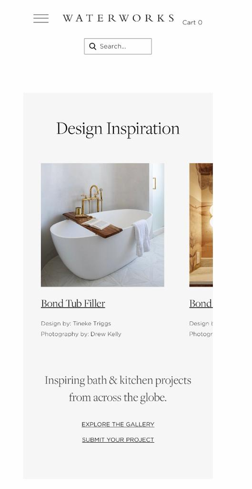

Visual Hierarchy
Honey Fashion and Accessories
Honey Fashion
Nielsen Norman Group noted that Summary: A clear visual hierarchy guides the eye to the most important elements on the page. It can be created through variations in color and contrast, scale, and grouping. A website with a good visual design allows the user to have a clear sense of direction. The eye is guided to consume each different elements. Good visual hierarchy can be created using, color and contract, scale and grouping. The Honey Fashion and Accessories makes use of color and contrast. The colors used grab attention. The use of lighter and darker colors balance each other. The title and the heading are in bold and lighter color grabing attention and the information is in smaller font size and darker. The sizes of font provide enough variety to clearly see the headings and text content. The title is the largest, the headings are medium size and the text content is smaller. This keeps the hierarchical relationship well defined and clear.
White Space and Clean Design
Water Works
Water Works White Space and Clean Design allows the design to breathe by reducing too much text and funstional elements that the user interacts with. The beauty of white space and clean design is that is make text to be clear and readable. It also guides the eye. According to Nick Babich he noted that White space has a tremendous impact on how people comprehend information because content relationships are defined by surrounding negative space. The water works website looks clean and neat. The white space clearly brings our the beautiful design. The page is not too busy. We see the connection of the title and the headings. White space drive user's attention to a particular object. In this case, the website drives the user to pay attention to the images of the beautiful tub without having to worry about reading alot of text. In Water works website, there is use of two colours to achive a clean look of the page. The white and light grey give attention to the picture and text content.
Repetition
Family Dinners
Family Dinners
Study.com highlights that the repetition principle of design means that the same or similar elements are used again. The principle of repetition in design is used to achieve consistency and uniqueness.It simply means that pictorial elements are completely or partially reused. These can be the same or similar colors in the design, the use of the same or similar lines, fonts, sizes, and textures, or certain shapes of elements. The Family Dinners website makes of repetition, the pictures are the same size. The title of each picture is on the left side, written in capital letters with a grey background. There is consistance as the same font size, font style and image sizes are being reused. The colors used also show repetition, there is use of warm colors that match. The top website banner has a similar color with the food on images used. That achieves consistency and uniqueness.